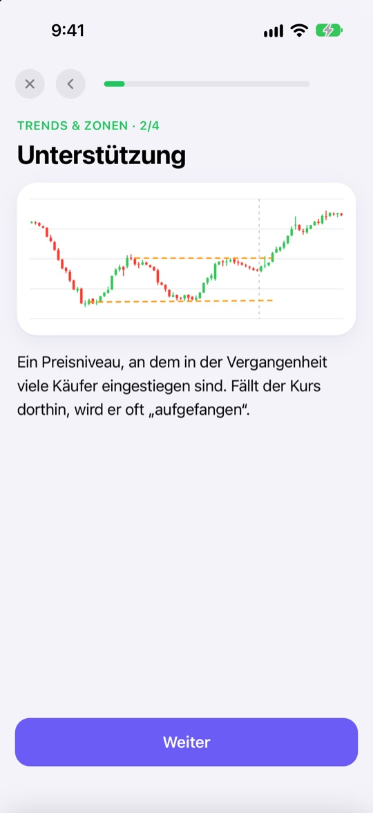

Einstieg
Börse lernen App: So findest du die richtige Lern-App
Eine gute Lern-App macht aus Börsenwissen eine tägliche Gewohnheit. Diese Checkliste zeigt, worauf du achten solltest, bevor du dich für eine App entscheidest.

Viele wollen die Börse nebenbei verstehen: in der Bahn, in der Mittagspause, abends auf dem Sofa. Dafür ist das Smartphone ideal, wenn die App wirklich erklärt und üben lässt. Das Problem: Unter „Börsen-App“ findest du sehr verschiedene Dinge. Manche wollen, dass du handelst, andere zeigen nur Kurse, und nur wenige bringen dir etwas bei.
Drei Arten von Börsen-Apps
| App-Art | Wofür | Für wen | Echtes Geld? |
|---|---|---|---|
| Lern-App | Begriffe, Charts und Strategien verstehen und üben | Einsteiger und alle, die tiefer einsteigen wollen | nein |
| Broker-App | Aktien, ETFs und Sparpläne kaufen und verkaufen | wer investieren will und die Grundlagen kennt | ja |
| Kurs- und News-App | Kurse, Watchlists und Nachrichten verfolgen | wer schon investiert ist | nein |
Wer gerade erst anfängt, braucht zuerst eine Lern-App. Eine Broker-App ist ein Werkzeug zum Handeln. Sie erklärt kaum, warum ein Kurs steigt oder fällt, und verdient daran, dass du Orders aufgibst. Mehr zu den Unterschieden steht im Artikel Aktien-App für Anfänger.
Checkliste: Daran erkennst du eine gute Lern-App
- Sie erklärt statt nur zu zeigen. Kurze Lektionen mit Beispielen, Skizzen und Charts, eine Idee pro Bildschirm.
- Du übst sofort. Nach jeder Lektion ein Quiz, dazu Chart-Training mit Erklärung nach jeder Antwort.
- Kein echtes Geld. Fehler kosten nichts. So lernst du ohne Druck, auch aus falschen Entscheidungen.
- Sie ist unabhängig. Keine Provision für Orders, kein Verkaufsdruck für bestimmte Produkte.
- Sie baut Schritt für Schritt auf. Vom ersten Begriff über Charts und Kennzahlen bis zu Strategien, mit Wiederholung.
- Sie hält dich bei der Stange. Tagesziel, Serien und Ligen helfen, dranzubleiben. Fünf Minuten täglich wirken besser als zwei Stunden einmal im Monat.
- Die Kosten sind klar. Was ist dauerhaft gratis, was kostet ein Abo, gibt es einen Kauf ohne Abo?
- Datenschutz stimmt. Brauchst du ein Konto? Werden deine Daten zu Werbezwecken getrackt?
Was gratis sein sollte
Die Grundlagen gehören nicht hinter eine Bezahlschranke. Prüfe vor dem Download, ob du ohne Abo mehr als eine Probelektion bekommst. Eine gute App lässt dich so weit kommen, dass du einschätzen kannst, ob dir das Lernen dort liegt. Erst Vertiefungen wie Strategien, Optionen oder Fallstudien müssen etwas kosten.
Für wen sich eine Lern-App lohnt
- Einsteiger, die einen ETF-Sparplan starten wollen oder schon einen haben und verstehen möchten, was sie da tun. Den Fahrplan dazu findest du im Artikel Investieren lernen.
- Chart-Neugierige, die Trading-Videos schauen und Charts selbst lesen wollen, bevor sie Geld riskieren. Mehr im Artikel Trading lernen.
- Schule, Studium und Ausbildung: kurze Einheiten passen zwischen zwei Termine.
- Fortgeschrittene, die Lücken schließen wollen, etwa bei Kennzahlen, Chartmustern oder Kerzenmustern.
Was eine App nicht ersetzt
Eine Lern-App ersetzt keine eigene Entscheidung und keine Anlageberatung. Mit echtem Geld fühlen sich Verluste anders an als im Spiel. Kosten, Steuern und die eigene Lebenssituation kommen hinzu. Eine App bereitet dich darauf vor, abnehmen kann sie dir das nicht.
So funktioniert InQuestly
InQuestly ist eine Lern-App fürs iPhone, die die Börse wie ein Spiel aufbaut:
- 16 Kurse mit 122 Lektionen, von „Was ist eine Aktie?“ über Charttechnik und Kennzahlen bis zu Optionen und Strategien. Jede Lektion dauert rund fünf Minuten und endet mit einem Quiz.
- Dauerhaft gratis: vier Kurse mit 32 Lektionen (Börsen-Basics, Investieren 101, Charttechnik, Fundamentaldaten), dazu Spiele wie „Bulle oder Bär?“, der Muster-Detektiv und Markt-Charts.
- Prognose-Duelle mit Freunden, gewertet mit echten Schlusskursen, ohne echtes Geld.
- Ohne Konto: Dein Fortschritt liegt auf deinem iPhone und in deiner iCloud.
- Pro schaltet alle Kurse und Trainer frei, etwa Kerzenmuster, Strategien und Fallstudien: 7,99 € im Monat, 49,99 € im Jahr mit einem Gratismonat oder 129,99 € einmalig. Maßgeblich ist der Preis, den die App vor dem Kauf anzeigt.
Wer erst testen will, wie viel er schon weiß, kann das Börsen-Quiz im Browser spielen.
Häufige Fragen
Gibt es eine App zum Börse lernen?
Ja. Lern-Apps wie InQuestly erklären Begriffe, Charts und Strategien in kurzen Lektionen und lassen dich ohne echtes Geld üben.
Kann man mit einer App wirklich Aktien lernen?
Ja, wenn die App erklärt und Übungen mit Rückmeldung bietet. Entscheidend sind kurze, regelmäßige Einheiten über mehrere Wochen.
Gibt es eine kostenlose App zum Börse lernen?
Viele Lern-Apps haben einen kostenlosen Teil. In InQuestly sind vier Kurse mit 32 Lektionen und mehrere Spiele dauerhaft gratis.
Brauche ich für eine Lern-App ein Depot?
Nein. Zum Lernen brauchst du weder Depot noch Geld. Ein Depot eröffnest du erst, wenn du wirklich investieren willst.
Gibt es eine App zum Trading lernen?
Ja. InQuestly erklärt Charttechnik, Risiko und Strategien und trainiert mit Chart-Spielen ohne echtes Geld. Die Strategie-Kurse gehören zu Pro.
Gibt es InQuestly auch für Android?
Derzeit gibt es InQuestly nur für das iPhone.
Dieser Artikel dient der Bildung und ist keine Anlageberatung. Beispiele sind vereinfacht und ohne Steuern dargestellt.